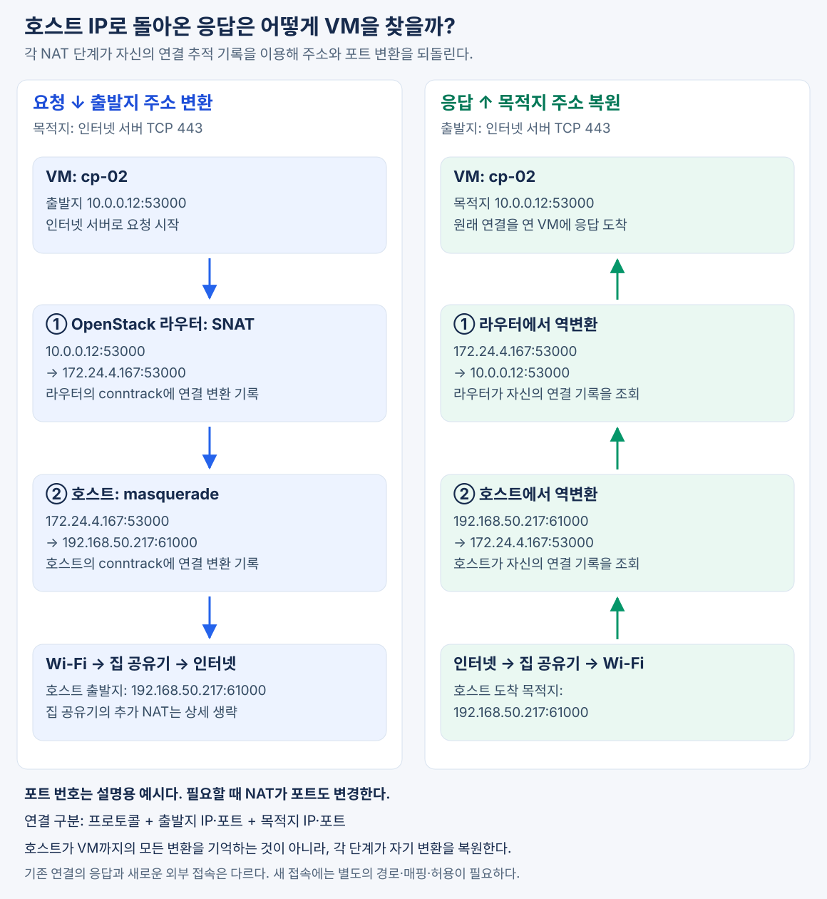

VM이 호스트의 Wi-Fi 연결을 통해 인터넷에 접속하면, 외부 서버에는 호스트의 IP에서 접속한 것처럼 보인다. 따라서 응답도 호스트 IP로 돌아온다.
그런데도 응답이 원래 VM에 도착하는 이유는 Linux 커널이 NAT로 변경한 연결 정보를 기록하고, 응답에서 그 변환을 되돌리기 때문이다. 이 기능을 연결 추적(conntrack)이라고 한다.
1. 왜 호스트에서 NAT를 사용했는가?
예시 환경에서는 OpenStack 호스트가 유선 대신 Wi-Fi로 집 공유기에 연결돼 있다.
일반적인 Wi-Fi 클라이언트 연결은 VM과 가상 라우터의 여러 MAC 주소를 그대로 전달하는 투명한 브리지로 사용하기 어렵다. 그래서 무선 랜카드를 OVS에 직접 연결하는 대신, 호스트가 가상 네트워크와 Wi-Fi 사이에서 라우터 역할을 하도록 구성했다.
VM
→ OpenStack 라우터
→ OVS
→ veth-ex ↔ veth-host
→ 호스트의 라우팅·NAT
→ Wi-Fi
→ 집 공유기
→ 인터넷
여기서 라우팅과 NAT는 역할이 다르다.
| 기능 | 역할 |
|---|---|
| 호스트의 라우팅 | 패킷을 Wi-Fi로 전달하며, Wi-Fi 구간에서는 호스트 무선 랜카드의 MAC 주소를 사용 |
| 호스트의 NAT | 패킷의 출발지 IP를 호스트의 Wi-Fi IP로 변환 |
호스트의 NAT 덕분에 집 공유기는 OpenStack의 172.24.4.0/24 대역으로 돌아가는 별도 경로 없이도 호스트에 응답을 보낼 수 있다.
2. 어떤 패킷에 NAT를 적용하는가?
호스트에 설정한 핵심 규칙은 다음과 같다.
ip saddr 172.24.4.0/24 oifname "wlo1" masquerade
이 규칙은 두 조건을 만족하는 패킷에 적용된다.
- 출발지 IP가
172.24.4.0/24에 속한다. - 출력 인터페이스가 호스트의 Wi-Fi인
wlo1이다.
masquerade는 이 패킷의 출발지 IP를 출력 인터페이스의 주소로 바꾸는 NAT 방식이다.
출발지 IP 변환
172.24.4.167 → 192.168.50.217
따라서 veth를 지나는 모든 패킷을 무조건 변환하는 것은 아니다. 호스트가 경로를 결정한 뒤, 위 조건에 맞게 Wi-Fi로 나가는 패킷에 적용한다.
kolla-lab-nat.service는 이 규칙을 부팅 때 등록하는 서비스다. 실제 패킷 처리는 서비스 프로세스가 아니라 Linux 커널의 네트워크 기능이 수행한다.
3. VM에서 호스트까지 두 단계의 NAT를 거친다
이 환경에서 일반적인 VM의 인터넷 연결은 OpenStack 라우터와 호스트에서 각각 출발지 주소 변환을 거친다.
이를 SNAT(Source NAT)라고 한다.
아래는 Floating IP가 없는 cp-02가 인터넷 서버에 HTTPS로 접속하는 예시다. 포트 번호는 설명을 위한 값이며, 실제로는 유지되거나 필요에 따라 변경될 수 있다.
| 단계 | 출발지 | 목적지 |
|---|---|---|
| VM이 보낸 패킷 | 10.0.0.12:53000 |
인터넷 서버의 443번 포트 |
| OpenStack 라우터의 NAT 후 | 172.24.4.167:53000 |
동일 |
| 호스트의 NAT 후 | 192.168.50.217:61000 |
동일 |
첫 번째 변환은 VM 내부 주소를 OpenStack 라우터의 외부 주소로 바꾼다. 두 번째 변환은 그 주소를 호스트의 Wi-Fi 주소로 바꾼다.
VM의 내부 IP
10.0.0.12
│ OpenStack 라우터의 SNAT
▼
라우터의 외부 IP
172.24.4.167
│ 호스트의 masquerade
▼
호스트의 Wi-Fi IP
192.168.50.217
집 공유기도 인터넷으로 나갈 때 사설 IP를 공인 IP로 바꾸는 일반적인 구성이면, 그곳에서 NAT가 한 번 더 일어난다. 여기서는 OpenStack 라우터와 호스트 사이의 두 단계를 중심으로 설명한다.
4. NAT는 주소를 바꾸면서 연결 정보를 기록한다
NAT는 출발지 IP만 바꾸고 원래 정보를 버리지 않는다. Linux 커널은 연결 추적 정보를 이용해 원래 연결과 변환된 연결의 대응 관계를 유지한다.
호스트의 변환을 예로 들면 다음과 같다.
변환 전 연결
172.24.4.167:53000 → 인터넷 서버:443
변환 후 연결
192.168.50.217:61000 → 인터넷 서버:443
호스트는 이 연결의 응답이 다음 형태로 들어올 것을 알고 있다.
인터넷 서버:443 → 192.168.50.217:61000
그리고 해당 응답의 목적지를 다음과 같이 되돌릴 수 있다.
인터넷 서버:443 → 172.24.4.167:53000
이는 개념적인 표현이며, 실제 conntrack은 원래 방향과 응답 방향의 연결 정보 및 NAT 상태를 함께 관리한다.
5. 응답은 각 단계에서 역변환되어 VM으로 돌아간다
집 공유기를 거쳐 호스트에 도착한 응답은 다음 순서로 처리된다.
응답이 호스트에 도착
목적지: 192.168.50.217:61000
│
│ 호스트가 연결 추적 정보를 찾아 NAT 역변환
▼
목적지: 172.24.4.167:53000
│
│ veth-host → veth-ex → OVS
▼
OpenStack 라우터에 도착
│
│ 라우터가 자신의 연결 추적 정보를 찾아 NAT 역변환
▼
목적지: 10.0.0.12:53000
│
│ 내부 인터페이스 → OVS → VM
▼
원래 요청을 보낸 VM에 도착

중요한 점은 호스트가 어느 VM에서 시작한 연결인지까지 전부 알아야 하는 것은 아니라는 것이다.
| NAT 수행 위치 | 자신이 기억하고 되돌리는 변환 |
|---|---|
| 호스트 | 192.168.50.217 ↔ 172.24.4.167 |
| OpenStack 라우터 | 172.24.4.167 ↔ 10.0.0.12 |
각 단계가 자신이 수행한 변환을 되돌리면, 응답은 순서대로 원래 VM까지 도착한다.
6. 여러 VM의 연결은 어떻게 구분하는가?
여러 VM이 같은 인터넷 서버에 동시에 접속해도, 연결 추적은 IP 주소 하나만 보고 구분하지 않는다.
일반적인 TCP·UDP 연결에서는 다음 정보를 조합한다.
- 프로토콜
- 출발지 IP와 포트
- 목적지 IP와 포트
필요하면 NAT가 출발지 포트까지 변경해 연결의 충돌을 피한다.
예를 들어 서로 다른 VM의 연결이 최종적으로 같은 호스트 IP를 사용하더라도 다음처럼 구분될 수 있다.
VM A의 연결 → 호스트 IP:61000 → 인터넷 서버:443
VM B의 연결 → 호스트 IP:61001 → 인터넷 서버:443
응답의 포트와 상대 서버 정보 등을 통해 각각의 연결을 찾아 역변환하는 것이다. 하나의 변환 포트를 VM 하나에 영구 배정하는 구조는 아니다.
7. 응답이 돌아오는 것과 외부에서 새로 접속하는 것은 다르다
연결 추적으로 되돌릴 수 있는 응답은 이미 존재하는 연결의 기록과 대응되는 패킷이다.
외부에서 갑자기 호스트 IP로 새로운 SSH 연결을 보내면, 그것을 어느 VM에 전달해야 하는지 알려주는 기존 NAT 기록이 없다.
따라서 외부에서 VM으로 새로운 연결을 시작하려면 별도의 방법이 필요하다.
| 방법 | VM으로 연결을 전달하는 원리 |
|---|---|
| Floating IP·포트포워딩 | 미리 설정한 주소·포트 매핑으로 목적지를 변환 |
| 내부 IP 직접 라우팅 | VM 내부 IP까지 경로를 구성해 전달 |
| SSH 점프 호스트 | 호스트가 대상 VM으로 TCP 연결을 열어 중계 |
어느 방식이든 방화벽과 보안 그룹의 허용이 필요하다. 연결 추적은 기존 연결의 응답을 식별하는 기능이며, 임의의 외부 요청을 자동으로 VM에 연결해 주는 기능은 아니다.